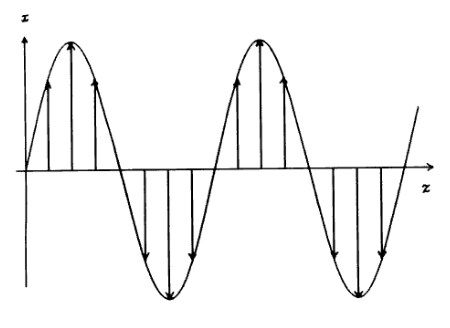
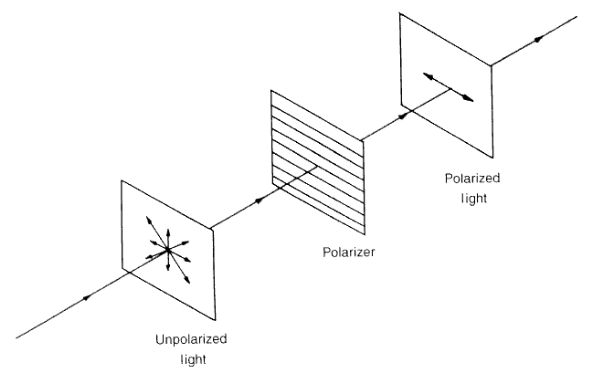
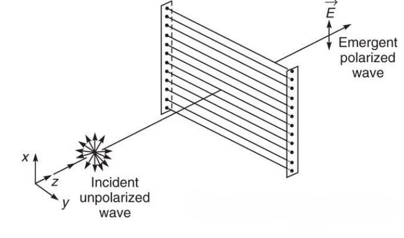
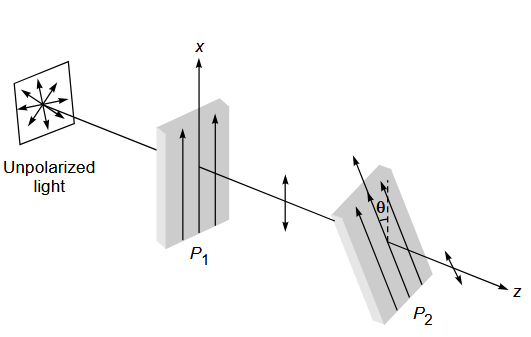

A linearly prolarized plane wave is the simplest electromagnetic wave, and if we assume the plane wave to be propagating in the \(+z\)-direction, the corresponding electric field can be written in the form
\[ \mathbf{E} = \mathbf{\hat{x}}E_0 \cos{(\omega t - kz + \theta)} \tag{3.1} \]where the electric field vector is assumed to oscillate in the \(x\)-direction.
Equation (3.1) describes an x-polarized wave. It is also known as a linearly polarized wave because the electric vector is oscillating along a specific axis.
In Equation (3.1), \(omega = 2 \pi v\) is the angular frequency and \(k\) is the propagation constant.
For propagation in free space
\[ k = \frac{\omega}{c} \]where \(c\) represents the velocity of light in free space.
When propagating in a medium characterized by refractive index \(n\), we have
\[ k = \frac{\omega}{v} \quad \text{where} v = \frac{c}{n} \]represents the velocity of the electromagnetic wave in that medium.

A linearly polarized wave is also known as a plane polarized wave because the electric field is always confined to a particular plane.
For the x-polarized wave propagating along \(z\)-direction, the electric field is confined to the \(x-z\) plane.

Consider an unpolarized electromagnetic wave incident on a wire-grid polarizer. An unpolarized wave is characterized by an electric field \(\mathbf{E}\) that vibrates randomly in all directions transverse to the direction of propagation (taken as the \(z\)-direction). The component of the electric field parallel to the wires (taken along \(\hat{y}\)) drives currents in the conducting wires and is therefore absorbed due to Joule heating. Assuming that the separation between the wires, which are very thin, is of the order of the wavelength, i.e.\(\sim \lambda\), the perpendicular component of the electric field (along \(\hat{x}\)) is not significantly impeded and hence passes through the grid. As a result, the transmitted electromagnetic wave becomes linearly polarized with its electric field along the \(\hat{x}\) direction. At optical frequencies, since \(\lambda\) is very small (sub-micrometer range), fabricating a wire-grid polarizer with such fine spacing is extremely difficult. Instead, polarization can be achieved using long-chain polymer molecules containing atoms such as iodine, which provide high electrical conductivity along the length of the molecular chains. The component of the vibrating electric field parallel to the molecular chains (along \(\hat{y}\)) is absorbed due to Joule heating, while the perpendicular component is transmitted. Such a polarization device is called a polaroid sheet.


First polaroid makes light linearly polarized. Second polaroid (analyzer) tests how much of that polarization matches its pass axis.
Malus's law:
\[ I = I_0 \cos^2(\theta) \]Consider the time variation of the superposition of two plane waves at an arbitrary plane \(z=0\), perpendicular to the \(z\)-axis. The electric field components are
\[ \vec{E}_x = \hat{x}\, a \cos (kz - \omega t) \] \[ \vec{E}_y = \hat{y}\, b \cos (kz - \omega t + \theta) \]where \(a\) and \(b\) are the amplitudes and \(\theta\) is the phase difference between the two components. Each wave is linearly polarized and propagates along the \(z\)-direction.
The resultant electric field is
\[ \vec{E} = \vec{E}_x + \vec{E}_y . \]At the plane \(z=0\), the field components reduces to
\[ E_x = a \cos(\omega t) \] \[ E_y = b \cos(\omega t - \theta) \]The polarization type depends on the phase difference \(\theta\) and amplitudes \(a\) and \(b\).
If
\[ E = \hat{x} E_0 x + \hat{y} E_0 y \]Polarization is geometry written in time.